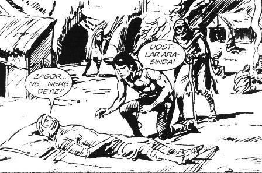

Asansör yönetim katına çıkmak bilmedi. Tanımadığı birisi daha:
– Elbise çok yakışmış Hıdır Bey, dedi.
İçinden “Sülaleni eşekler kovalasın” demek üzereyken, kendini zor tuttu. Elini diyaframına bastırdı.
Gülümsemeye çalıştı; ama beden dili laçka olmuştu. Başka “Elbise yakışmış” diyen olursa diye korkuyla başka tarafa döndü.
Kapı açıldı, asansörden Maymuncuk iletişim kitabından öğrendiği gibi “İyi günler” diyerek çıktı. Kimse ses etmedi. Maymuncuk’u yazan, Türk töresinde asansörde konuşanın topuğundan vurulduğu gerçeğini bilmiyordu.
Hıdır Azgören kapıyı toklattı.
Çıt yok. Kapıyı tıklattı.
Girin, diyen yok.
Biraz bekledi geri dönüp dönmemek konusunda kararsız kaldı, kapıyı sessizce açtı.
Muhteşem...
Muhteşem bir manzarayla karşılaştı. Sanki bu oda onların bakanlıkta değildi. Müthiş bir lüks vardı içeride. Genel Müdür Yardımcısı’nı görünce iyice şaşırdı. Devlette bu görevlere ihtimal yok bir kadın gelemezken, bir bayan genel müdür yardımcısı. Müthiş.
Şak ayaklarını birbirine vurdu.
Bu odaya 14 yıldır ilk defa giriyordu, bir daha da giremeyecekti.
“Sayın Genel Müdürüm bir maruzatım var” dedi ve anlatmaya başladı.
Hazırladığı raporu detaylı anlatırken aslında planladığı birçok şeyi yapmadığını fark etti. Kadın hayretle ona bakıyordu. “Oturun” bile dememişti. Hayretinin iki nedeni olabilirdi: Ya çok etkilendi ya da bu kadar direkt olmasına şaşırdı. Tabii alışık değildi Genel Müdür Yardımcısı, bu kadar yağcının arasında gerçekleri böyle yalın söyleyen biriyle karşılaşmaya.
Bu arada odun gibi sabit durduğunu fark etti. Ne diyordu, Sunuşun 100 Mucize Tekniği kitabında Simon Ofenber: “Sabit kalmayın etkiniz azalır.”
İki adım öne attı. Çok yakına girmişti, bir adım çaktırmadan gerilemeye çalıştı. Kadının ayağına baktığını görünce kıpırdamadı. Fakat şimdi bir ayağı geride bacak hafif bükük, diğer bacak önde o da hafif bükük kalakalmıştı.
“İlgiyi elime çekmeye çalışmalıyım” diye düşündü. Sağ elini, avucu göğü, parmakları kıbleyi gösterir şekilde kaldırdı.
Ne diyeceğini şaşırdı. Birden donduğunu fark etti, okuduğu Sammy Molcho’nun Beden Dili kitabı aklına geldi. Dosyayı “kapalılık” ifadesi verecek şekilde tutuyordu; sol eliyle liseli kızlar gibi göğsüne kapatmıştı.
Hızla dosyayı diklemesine yukarı kaldırdı. Anladı ki aslında indirse daha iyi olacaktı. Fakat indiremedi; çünkü Genel Müdür Yardımcısı faltaşı gibi açılmış gözlerle, dikkatle onu izliyordu.
Projektör ışığı görmüş tavşan gibi kaldı.
Beden dili açısından son durum şuydu. Dosya sol omzunun üstünde, sol el baş hizasında dosyayı kavramış. Sağ el dudak hizasında vücuttan uzak, bilek gereksiz bükük (Hamlet’in kafatası sahnesini düşünün). İki bacak arka arkaya, aralarında en az yarım metre var ve iki diz de bükük.
Hıdır dengesinin kaybolmak üzere olduğunu ama kıpırdayamadığını fark etti, iki dizi de pozisyondan dolayı karıncalanmıştı.
Acı çektiğini hissetti.
Son bölümleri özetleyerek bağlarken aklına Otto Schober’in Sözsüz İletişim kitabındaki bakış geldi.
Onu kurtarsa kurtarsa bu bakış kurtarırdı. “Güç bakışı!” Mitterand ve Chirac’ın dünyaya bakışı. Asil bir Fransız bakışı. Başını hızla geriye attı. “Çıtort” diye bir ses duyuldu. Boynunun kilitlendiğini hissetti.
Bu şekilde kadını göremiyordu. Baş geride, burun havada, açıyı düzeltmek için öne eğilirken karıncalanmış dizlerinin artık kıpırdamadığını fark etti. Dengesini kaybedip yana doğru devrilirken, Genel Müdür Yardımcısı’nın gülme krizi geçirdiğini fark etti.
Aklına büyük usta Stephen Covey’in kitabındaki cümle geldi: “Önemli olan kaç kere düştüğünüz değil, kaç kere kalktığınızdır.”
O sırada Genel Müdür Yardımcısı’nın sesini halıya yapışmamış kulağıyla duydu.
– Ay burası özel kalem, yanlış gelmişsin. Genel Müdür Yardımcısı’nın odası karşısı. Ay ölcem gülmekten...
Bugüne değin zihnin spiritüel ve maddi bolluğu çeken manyetik gücünden söz edildiğini hiç duymamıştım.[12]
